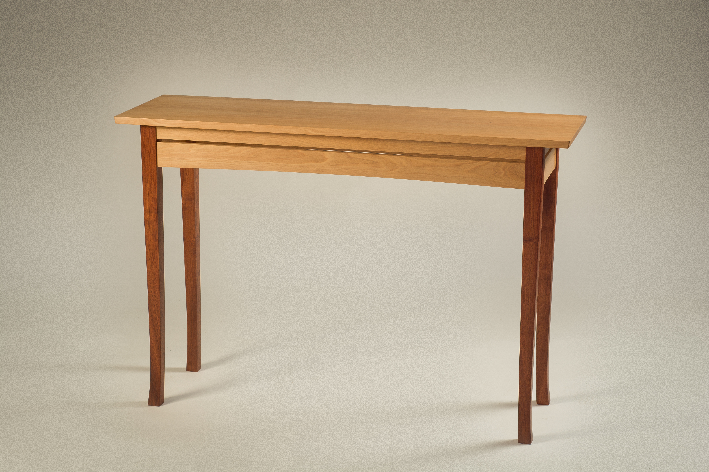
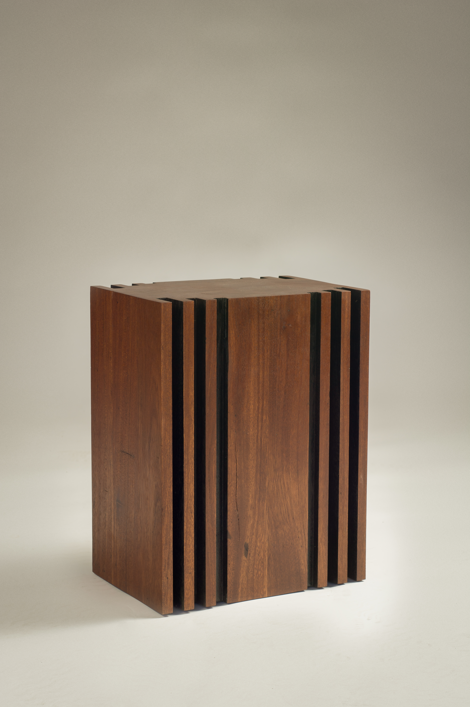
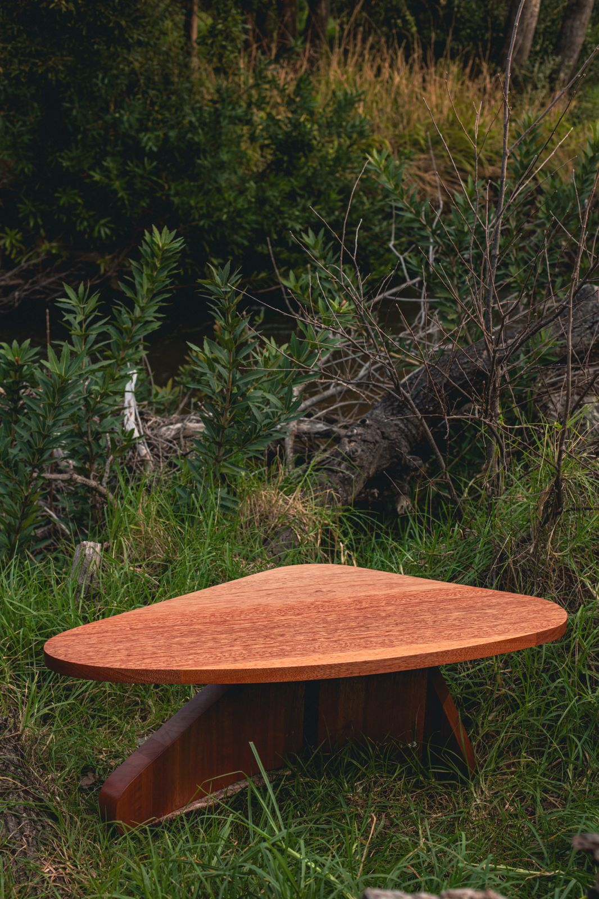
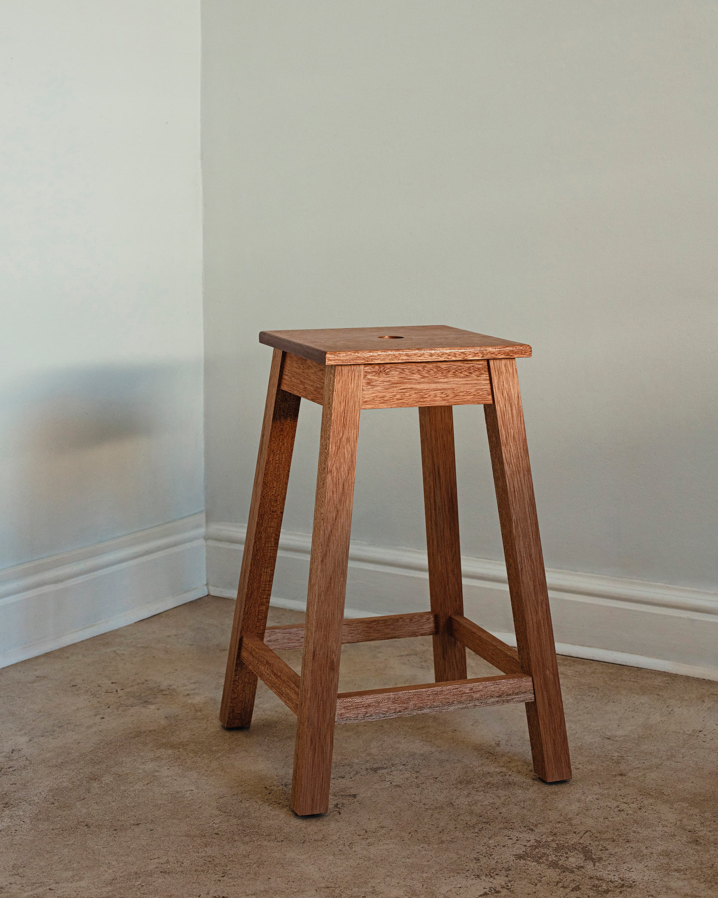
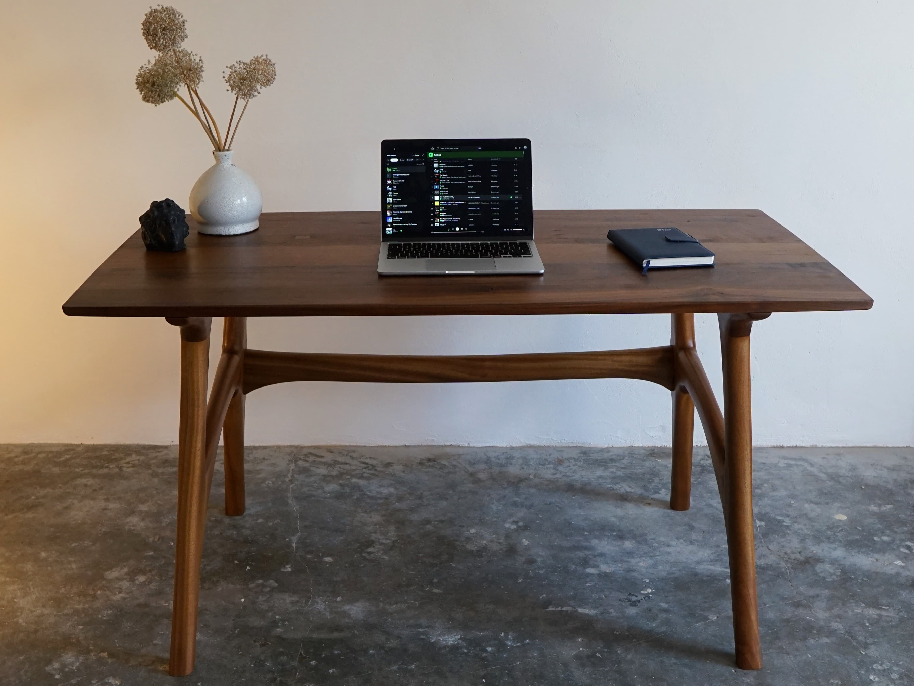
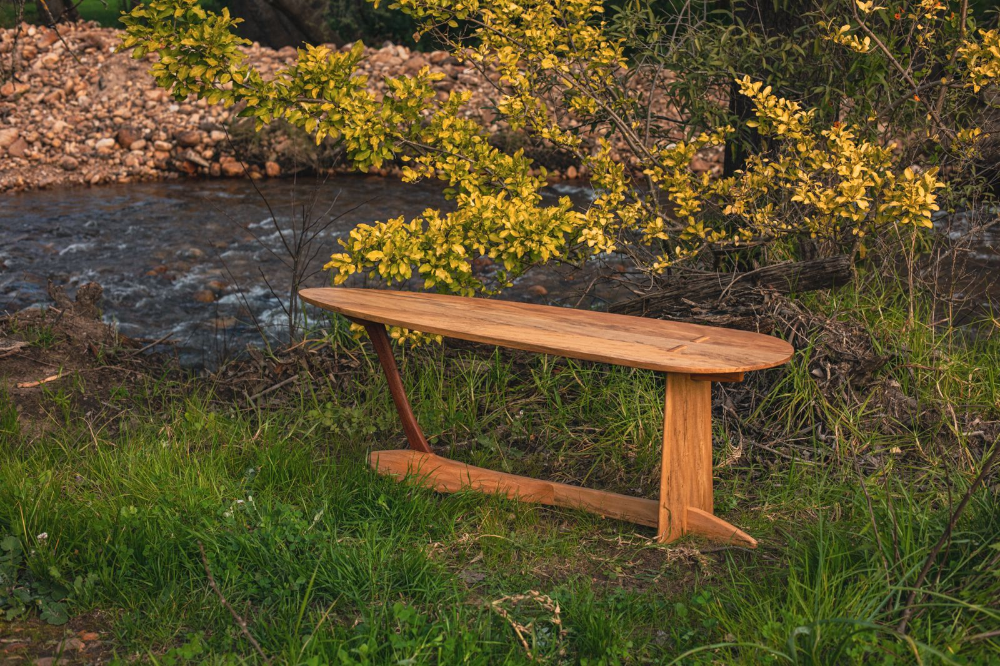

FECIT / Furniture & objects
Archive
An exploration of form, material and everyday use. Furniture designed and made by hand in Cape Town.
A collection of work01 — 10

01
Bench
WF08 Foyer Bench

02
Bench
Fecit Platform

03
Chair
WF05 Dining Chair

04
Table
WF06 Hallway Table

05
Table
Pillar Table

06
Chair
WF03 Lounge Chair

07
Table
Risibiki Table

08
Stool
Kitchen Stool

09
Desk
Sculptural Desk

10
Table
Reef Table
Made for your space